Redundant number systems
Ordinary binary gives every value exactly one representation, and that uniqueness is what makes addition slow: a carry born at bit 0 may propagate all the way to bit 47. Redundant number systems deliberately allow multiple representations per value; the slack lets each digit position absorb what would have been a travelling carry.
Conventional binary, CSD and RR4 all represent integers perfectly; converting between them loses nothing, ever. Redundancy trades cost, never accuracy — the opposite deal from quantization. The comparison is purely about time, gates and bits.
xpuFP.value — Function
value(sd::SignedDigits)Evaluate the represented number, exactly:
\[x = \sum_i d_i \, r^{\,i-1+\mathrm{exponent}}\]
This is the invariant every redundant algorithm in this module preserves: representation free, value invariant.
The return type follows the value, not the container: an Integer when the number is integral (which is every exponent ≥ 0 case), otherwise an exact Rational{BigInt}. Use float_value if you want a Float64 regardless.
julia> value(SignedDigits([-1, 0, 0, 1], 2, 1)) # 8 − 1
7
julia> value(SignedDigits([1, 1], 4, 2, -1)) # 1/4 + 1
5//4xpuFP.weight — Function
weight(sd::SignedDigits) -> IntNumber of nonzero digits. For a constant multiplier this is the count that matters: one adder per nonzero digit beyond the first, with -1 digits free because subtraction costs the same as addition in two's complement.
xpuFP.adders — Function
adders(sd::SignedDigits) -> IntAdders needed to multiply by this constant: weight − 1.
xpuFP.redundancy — Function
redundancy(sd::SignedDigits) -> IntThe surplus ρ = 2a + 1 − r. Radix 4 offers exactly two redundant settings: ρ = 1 (minimally redundant, {-2..2} — Booth's alphabet) and ρ = 3 (maximally redundant, {-3..3} — the fully local carry-free adder's alphabet).
redundancy(f::DigitFormat) -> IntThe surplus |D| − r. Radix 4 offers exactly two redundant settings: ρ = 1 (minimally redundant) and ρ = 3 (maximally redundant).
xpuFP.is_redundant — Function
is_redundant(sd::SignedDigits) -> BoolWhether the alphabet is larger than the radix, i.e. whether multiple spellings of a value exist.
is_redundant(f::DigitFormat) -> BoolWhether the alphabet is larger than the radix, i.e. whether multiple spellings exist.
xpuFP.digit_string — Function
digit_string(sd::SignedDigits; msb_first=true, point=true) -> StringRender the digits with an overbar-style 1̄ for negatives, most significant first by convention, inserting a radix point when the exponent is negative.
julia> digit_string(SignedDigits([-1, 0, 0, 1], 2, 1))
"1001̄"
julia> digit_string(to_rr4(49.25))
"301.1"Canonical signed digit
The cashier's trick: paying a 999 bill by handing over 1000 and receiving 1 is writing $999 = 1000 - 1$. Binary CSD is the identical move on runs of ones.
xpuFP.csd — Function
csd(x::Integer) -> SignedDigitsThe canonical signed-digit (non-adjacent form) spelling of x, over the digit set {-1, 0, 1} in radix 2.
Remarkably, finding the minimum-weight representation involves no search at all. A single greedy pass from the least significant bit produces it:
xeven → emit0, halve.x ≡ 1 (mod 4)→ this1is isolated: emit+1and keep it.x ≡ 3 (mod 4)→ this1starts a run: emit-1, turning the whole run into a single borrow that surfaces at the run's far end.
Subtract the emitted digit, halve, repeat. The greedy output is not merely good: the non-adjacent form is provably minimum-weight over every signed-binary spelling, so the linear scan already delivers the global optimum (see verify_csd_minimal).
julia> sd = csd(231);
julia> digit_string(sd) # 256 − 32 + 8 − 1
"1001̄01001̄"
julia> weight(sd), adders(sd) # 3 adders instead of binary's 5
(4, 3)
julia> digit_string(csd(27)) # 32 − 4 − 1
"1001̄01̄"xpuFP.csd_trace — Function
csd_trace(x::Integer) -> Vector{NamedTuple}The greedy scan, step by step: the running value, its residue mod 4, the digit emitted, and why. This is the table in the report's CSD section.
julia> for r in csd_trace(27); println(r.x, " mod4=", r.mod4, " → ", r.digit, " ", r.why); end
27 mod4=3 → -1 run starts: borrow
14 mod4=2 → 0 even
7 mod4=3 → -1 run starts: borrow
4 mod4=0 → 0 even
2 mod4=2 → 0 even
1 mod4=1 → 1 isolated one: keepxpuFP.all_signed_spellings — Function
all_signed_spellings(x::Integer, ndig::Integer) -> Vector{SignedDigits}Every signed-binary spelling of x that fits in ndig digits, sorted by weight.
The landscape shows why the canonical form matters twice over: cost varies wildly (three adders up to eight for spellings of the very same number), and even the minimum need not be unique — the non-adjacency rule is what breaks the tie canonically.
julia> sp = all_signed_spellings(231, 9);
julia> length(sp) # the full census
31
julia> minimum(weight, sp) # the two best spellings
4
julia> count(s -> weight(s) == 4, sp)
2
julia> only(filter(s -> weight(s) == 4 && !has_adjacent_nonzeros(s), sp)) |> digit_string
"1001̄01001̄"xpuFP.verify_csd_minimal — Function
verify_csd_minimal(upto::Integer) -> BoolCheck exhaustively that the greedy scan's weight equals the true minimum over all signed-binary spellings, for every x ≤ upto.
The minimum is computed by a dynamic program over the two carry states, which is independent of the greedy rule — so agreement is real evidence, not a tautology.
julia> verify_csd_minimal(2000)
truexpuFP.min_signed_weight — Function
min_signed_weight(x::Integer) -> IntThe minimum number of nonzero signed-binary digits needed to spell x, by dynamic programming over the carry state — an independent check on csd.
xpuFP.csd_multiplier_taps — Function
csd_multiplier_taps(x::Integer) -> Vector{Tuple{Int,Int}}The (shift, sign) taps of a CSD constant multiplier: one per nonzero digit. Shifts are free (wiring), so y = c·x costs one adder/subtractor per tap beyond the first.
julia> csd_multiplier_taps(231) # 2^8 − 2^5 + 2^3 − 2^0
4-element Vector{Tuple{Int64, Int64}}:
(0, -1)
(3, 1)
(5, -1)
(8, 1)xpuFP.csd_multiply — Function
csd_multiply(c::Integer, x::Integer) -> IntEvaluate c·x through the CSD tap structure — shifts and adds only, no multiplier. Exact by construction: CSD is a re-spelling, not an approximation, so this loses nothing, ever.
julia> csd_multiply(231, 1234) == 231 * 1234
truexpuFP.csd_density — Function
csd_density(nbits::Integer; trials=10_000, rng=Random.default_rng()) -> NamedTupleMeasure the expected nonzero density of binary versus CSD over random nbits constants. The theory says the density drops from 1/2 to 1/3; this measures it.
julia> csd_density(16; trials=20_000)
(binary = 0.4999, csd = 0.3335, binary_weight = 8.0, csd_weight = 5.7, saving = 0.29)xpuFP.binary_weight — Function
binary_weight(x::Integer) -> IntNumber of set bits — the adder count of a naive shift-and-add constant multiplier. A random n-bit constant has n/2 expected nonzero bits against CSD's n/3 + O(1), a guaranteed-average 33% cut.
plot_csd_digits(231)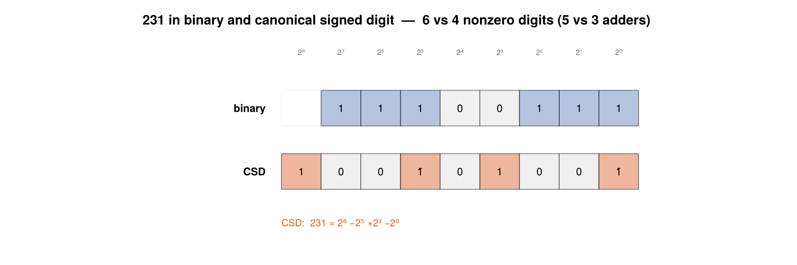
The greedy $\bmod 4$ scan emits the provably minimum-weight spelling with no search at all. Here is the whole landscape it is choosing from:
plot_csd_census(231, 9)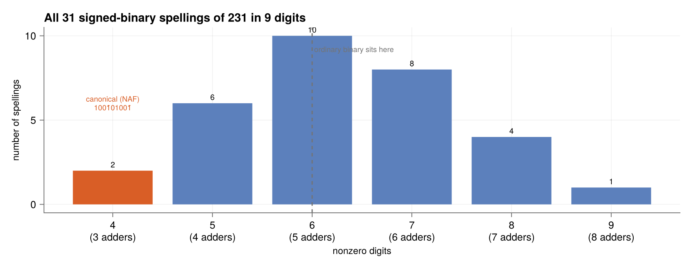
Cost varies wildly — three adders up to eight for spellings of the very same number — and even the minimum is not unique. Two spellings achieve weight 4; the non-adjacency rule is what breaks the tie canonically.
Redundant radix 4
Representation
A radix-4 signed-digit number is a SignedDigits with radix = 4: a digit vector (least significant first), the alphabet half-width, and a radix-4 exponent giving the weight of the least significant digit. The value is always
\[x = \sum_i d_i \, 4^{\,i-1+\mathrm{exponent}}\]
The exponent is what makes fractions representable, and it is exact for every Float64: a float is a dyadic rational $m \cdot 2^k$, and since $4 = 2^2$ every dyadic rational has a finite radix-4 expansion. Nothing is rounded on the way in.
xpuFP.dyadic_parts — Function
dyadic_parts(x; fracdigits=nothing) -> (N::BigInt, exponent::Int)Decompose x into a scaled integer, x ≈ N · 4^exponent, exactly where possible.
Integers are trivially exact. Every Float64 is a dyadic rational m·2^k, and since 4 = 2² every dyadic rational has a finite radix-4 expansion — so floats convert exactly, without rounding. A Rational whose denominator is not a power of two (say 1//3) has no finite expansion in any power-of-two radix and must be rounded; pass fracdigits to say how far.
Passing fracdigits always forces rounding to that many radix-4 fraction digits, even when an exact expansion exists.
julia> dyadic_parts(49)
(49, 0)
julia> dyadic_parts(49.25) # 49.25 = 197/4, exact in one fraction digit
(197, -1)
julia> dyadic_parts(1//3; fracdigits = 3)
(21, -3)xpuFP.scale — Function
scale(sd::SignedDigits) -> Rational{BigInt}The weight of the least significant digit, radix^exponent.
xpuFP.scaled_integer — Function
scaled_integer(sd::SignedDigits) -> BigIntThe digit string read as a plain integer, ignoring the exponent: N = Σ dᵢ·rⁱ⁻¹.
Together with the scale this is the whole number, value = N · radix^exponent — the same "integer plus an agreed scale" decomposition that fixed point uses, which is why a redundant digit string can carry fractions at no structural cost.
julia> sd = to_rr4(49.25);
julia> scaled_integer(sd), sd.exponent # 197 × 4^-1 = 49.25
(197, -1)xpuFP.nfracdigits — Function
nfracdigits(sd::SignedDigits) -> IntHow many digits sit to the right of the radix point, max(0, -exponent).
xpuFP.isintegral — Function
isintegral(sd::SignedDigits) -> BoolWhether the represented value is an integer.
xpuFP.float_value — Function
float_value(sd::SignedDigits) -> Float64The represented number as a Float64, whatever its exponent. Convenient for plotting and comparison; use value when you need exactness.
Getting at the pieces
to_rr4 returns a container; when you want the raw arrays — to index into, or to feed a circuit model — ask for the parts instead:
xpuFP.to_rr4_parts — Function
to_rr4_parts(x; alphabet=MIN_REDUNDANT, kwargs...) -> NamedTupleConvert to RR4 and return the unpacked pieces rather than the container: the digit array and the integer scale, plus the scaled integer they multiply out to.
Same keywords as to_rr4. Equivalent to digit_parts(to_rr4(x; ...)), and provided because the digit vector and the exponent are usually what you actually want to index into or feed to a circuit model.
julia> p = to_rr4_parts(49);
julia> p.digits, p.scale
([1, 0, -1, 1], 0)
julia> p.scaled_integer, p.value
(49, 49)
julia> q = to_rr4_parts(49.25);
julia> q.digits, q.scale, q.scaled_integer # 197 × 4^-1 = 49.25
([1, 1, 0, -1, 1], -1, 197)
julia> q.value
197//4xpuFP.to_digits_parts — Function
to_digits_parts(f::DigitFormat, x; kwargs...) -> NamedTupleThe to_rr4_parts equivalent for any DigitFormat.
julia> to_digits_parts(CSD, 231).digits
9-element Vector{Int64}:
-1
0
0
1
0
-1
0
0
1xpuFP.digit_parts — Function
digit_parts(sd::SignedDigits) -> NamedTupleUnpack a digit string into its pieces, for when you want the raw arrays rather than the container.
Returned fields
digits::Vector{Int}— least significant first, the field order.digits_msb::Vector{Int}— most significant first, the printed order.scale::Int— the integer exponent: the least significant digit has weightradix^scale.scaled_integer::BigInt—N, withvalue == N · radix^scale.radix,maxdigit,alphabet,nonzeros,value,string.
digits is indexed by significance (digits[1] is the least significant, so digits[i] has weight radix^(i-1+scale)), while digits_msb matches how the number reads on the page. Mixing them up is the easiest indexing error here, so both are provided by name.
julia> p = digit_parts(to_rr4(49));
julia> p.digits, p.scale, p.scaled_integer
([1, 0, -1, 1], 0, 49)
julia> p.digits_msb
4-element Vector{Int64}:
1
-1
0
1julia> using xpuFP
julia> p = to_rr4_parts(49.25);
julia> p.digits, p.scale, p.scaled_integer
([1, 1, 0, -1, 1], -1, 197)
julia> p.value == p.scaled_integer * Rational{BigInt}(4)^p.scale
trueThe identity value = scaled_integer × radix^scale is the same "integer plus an agreed scale" decomposition fixed point uses — which is why a redundant digit string carries fractions at no structural cost.
digits is indexed by significance: digits[1] is the least significant, so digits[i] carries weight radix^(i-1+scale). digits_msb is the printed order. Mixing them up is the easiest indexing error in this module, so both are named.
Converting in, from anything
xpuFP.to_rr4 — Function
to_rr4(x; alphabet=MIN_REDUNDANT, fracdigits=nothing, ndigits=nothing, exponent=nothing)Convert anything into a legal redundant-radix-4 digit string.
Accepts Integer, AbstractFloat, Rational, and SignedDigits (which re-spells an existing string into the target alphabet, radix 4 or otherwise). Floats convert exactly — every Float64 is a dyadic rational and therefore has a finite radix-4 expansion — so no precision is silently invented.
The default alphabet is MIN_REDUNDANT ({-2..2}), the one hardware actually uses. For the fully local carry-free adder's {-3..3} use to_rr4_maximal, which is named rather than flagged so the two can never be confused.
Keywords
alphabet— target alphabet.fracdigits— round to this many radix-4 fraction digits. Required for rationals with no finite expansion (1//3); optional elsewhere.ndigits— pad (or demand) exactly this many digits; seerr4_with_length.exponent— force this radix-4 exponent instead of the natural one.
Because the system is redundant this returns a spelling, not the spelling. The rule is a single borrow pass over the non-redundant {0..3} digits: cheap, deterministic and reproducible, but not minimum weight — it exceeds the minimum for about 28% of values. For the cheapest spelling use canonical_rr4; for the whole set see all_rr4_representations; for the shortest, minimal_rr4.
julia> value(to_rr4(49))
49
julia> value(to_rr4(49.25)) # exact: 49.25 = 197/4
197//4
julia> digit_string(to_rr4(49.25))
"301.1"
julia> value(to_rr4(-7//8))
-7//8
julia> value(to_rr4(1//3; fracdigits = 6)) # no finite expansion — rounded
1365//4096xpuFP.to_rr4_minimal — Function
to_rr4_minimal(x; kwargs...) -> SignedDigitsConvert into the minimally redundant {-2..2} alphabet — Booth's alphabet, and what every shipping multiplier and SRT divider recodes into. Same as the to_rr4 default, spelled out.
xpuFP.to_rr4_maximal — Function
to_rr4_maximal(x; kwargs...) -> SignedDigitsConvert into the maximally redundant {-3..3} alphabet — the one whose extra slack permits the fully local, one-column carry-free addition rule.
Deliberately a separate function rather than a keyword: "maximal alphabet" and "minimal length" are different axes, and conflating them is the easiest mistake to make in this corner of the subject.
julia> sd = to_rr4_maximal(49);
julia> sd.maxdigit, value(sd)
(3, 49)MIN_REDUNDANT describes the alphabet ({-2..2}, small surplus). minimal_rr4 finds the shortest spelling (fewest digits), and works in either alphabet. They are orthogonal axes, which is why the alphabet constants are named MIN_REDUNDANT/MAX_REDUNDANT rather than MINIMAL/MAXIMAL, and why the maximally redundant conversion has its own function name instead of a flag.
Arithmetic on digit strings
to_rr4(a) + to_rr4(b) just works, and so do -, *, comparison and mixing with ordinary numbers.
Base.:+ — Method
+(x::SignedDigits, y::SignedDigits) -> SignedDigitsAdd two digit strings. Exact, and for radix 4 it runs the genuine carry-free addition rule — operands are aligned to the finer exponent, then every column resolves in parallel with transfers that travel one position and stop.
Operands may use different alphabets and different exponents; the result takes the wider alphabet and the finer exponent.
julia> s = to_rr4(712.3) + to_rr4(12.3);
julia> Float64(value(s))
724.6
julia> value(s) == Rational{BigInt}(712.3) + Rational{BigInt}(12.3)
trueFor the column-by-column trace — transfers, interim digits, depth — call rr4_add instead, which returns an RR4AddTrace. For a side-by-side cost comparison against ripple and prefix adders, use compare_adders.
Base.:* — Method
*(x::SignedDigits, y::SignedDigits) -> SignedDigitsMultiply two digit strings. Exponents add and the scaled integers multiply, so the result is exact.
julia> p = to_rr4(49.25) * to_rr4(4);
julia> value(p)
197//1
julia> to_rr4(12) * to_rr4(12) |> value
144This gives the product. For the structure — partial products, the carry-save reduction tree, the single exit CPA — use rr4_multiply, wallace_multiply or booth_multiply, which report rows, tree levels, cells and depth.
Base.:(==) — Method
==(x::SignedDigits, y::SignedDigits) -> BoolCompare by value, not by spelling.
This is the right semantics for a redundant system: (1,0,3)₄ and (1,0,-1,1)₄ are different strings denoting the same 49, and the whole design principle is representation free, value invariant. Use same_spelling when you need digit-for-digit identity.
julia> to_rr4(49) == to_rr4_maximal(49) # different alphabets, different digits
true
julia> same_spelling(to_rr4(49), to_rr4_maximal(49))
falsexpuFP.same_spelling — Function
same_spelling(x::SignedDigits, y::SignedDigits) -> BoolDigit-for-digit identity, including alphabet and exponent — the stricter comparison that == deliberately does not perform.
xpuFP.promote_alphabet — Function
promote_alphabet(sd::SignedDigits, maxdigit::Integer) -> SignedDigitsRe-label a digit string as belonging to a wider alphabet. Free and lossless — the alphabets are strictly nested, so every legal string in {-a..a} is already legal in {-b..b} for b ≥ a.
xpuFP.sum_rr4 — Function
sum_rr4(xs; alphabet=MIN_REDUNDANT) -> SignedDigitsAccumulate many values in the redundant domain, converting once at the end.
This is the shape the whole redundancy argument is about: k additions cost Θ(k) constant-depth steps plus one exit conversion, against Θ(k log n) for a conventional chain that re-canonicalises after every term.
julia> value(sum_rr4([1, 2, 3, 4, 5]))
15
julia> Float64(value(sum_rr4([712.3, 12.3, 0.4])))
725.0xpuFP.dot_rr4 — Function
dot_rr4(xs, ys; alphabet=MIN_REDUNDANT) -> SignedDigitsA dot product computed entirely in the redundant domain — exact, with one conversion at the exit rather than one per term.
julia> using xpuFP
julia> s = to_rr4(712.3) + to_rr4(12.3);
julia> value(s) == Rational{BigInt}(712.3) + Rational{BigInt}(12.3)
true
julia> value(to_rr4(49.25) * to_rr4(4))
197//1
julia> value(sum_rr4([1, 2, 3, 4, 5]))
15value(to_rr4(712.3) + to_rr4(12.3)) is the exact sum of the two Float64s. 712.3 + 12.3 in Float64 rounds, and misses it by $4.6\times10^{-14}$. This is the redundancy bargain stated plainly: cost is traded, accuracy never is.
Note the corollary — Float64(value(...)) prints 724.5999999999999, not 724.6, precisely because the exact answer is not a Float64.
+ returns a SignedDigits. When you want the column-by-column story — transfers, interim digits, constant depth — call rr4_add, which returns an RR4AddTrace. For multiplication structure use rr4_multiply, wallace_multiply or booth_multiply; for a cost table across strategies use compare_adders and compare_multipliers.
Negation is free in a signed-digit system — flip every digit, no borrow, no carry — which is the same fact that makes -1 digits cost nothing extra in a CSD constant multiplier.
Equality compares values, not spellings, because the whole design principle is representation free, value invariant:
julia> using xpuFP
julia> to_rr4(49) == to_rr4_maximal(49)
true
julia> same_spelling(to_rr4(49), to_rr4_maximal(49))
falseEnumerating and reshaping
Because the system is redundant, to_rr4 returns a spelling, not the spelling.
As a table, with the digits and the scale
xpuFP.rr4_representations — Function
rr4_representations(x; method=:minimally_redundant, ndigits=nothing,
fracdigits=nothing, exponent=nothing) -> RR4RepresentationsList every redundant radix-4 spelling of x, returning the digits as a matrix and the shared scaling exponent.
method selects the digit alphabet:
method | alphabet | note |
|---|---|---|
:minimally_redundant (default) | {-2..2} | Booth's alphabet; what ships in silicon |
:maximally_redundant | {-3..3} | the slack that permits fully local carry-free addition |
ndigits defaults to min_ndigits — the shortest width the alphabet allows. Widen it to see the spelling freedom grow, since the set is only finite once the width is fixed.
The true total is computed first by a cheap dynamic program, so it is always reported even when only limit rows (default 10 000) are materialised; truncated says which happened. Any Float64 needs ~27 radix-4 digits, and at that width some values have very many spellings — count_rr4_representations answers "how many" without building them.
julia> r = rr4_representations(12.5);
julia> r.ndigits, r.scale, size(r.digits)
(4, -1, (2, 4))
julia> r.digits # one row per spelling, MSB first
2×4 Matrix{Int64}:
1 -1 0 2
1 -1 1 -2
julia> r.value
25//2
julia> rr4_representations(25; method = :maximally_redundant).digits |> size
(4, 3)Each row means Σᵢ dᵢ·4^(i-1+scale) once read back least-significant-first; the digit_matrix_with_scale helper appends the scale as a final column, which is what plot_rr4_representations draws.
Missing docstring for RR4Representations. Check Documenter's build log for details.
xpuFP.digit_matrix — Function
digit_matrix(r::RR4Representations) -> Matrix{Int}The digits alone, one row per spelling, most significant first.
xpuFP.digit_matrix_with_scale — Function
digit_matrix_with_scale(r::RR4Representations) -> Matrix{Int}The digits with the scaling exponent appended as a final column — the layout plot_rr4_representations renders, where the last cell of each row is the scale rather than a digit.
julia> digit_matrix_with_scale(rr4_representations(12.5))
2×5 Matrix{Int64}:
1 -1 0 2 -1
1 -1 1 -2 -1Missing docstring for plot_rr4_representations. Check Documenter's build log for details.
julia> using xpuFP
julia> r = rr4_representations(12.5);
julia> r.ndigits, r.scale
(4, -1)
julia> r.digits
2×4 Matrix{Int64}:
1 -1 0 2
1 -1 1 -2
julia> digit_matrix_with_scale(r)
2×5 Matrix{Int64}:
1 -1 0 2 -1
1 -1 1 -2 -1Check the cost before you enumerate
xpuFP.rr4_complexity — Function
rr4_complexity(x; method=:minimally_redundant, ndigits=nothing, fracdigits=nothing,
limit=10_000) -> RR4ComplexityCount a value's redundant spellings and report what enumerating them would cost, without enumerating anything.
Print it for a readable summary, or read the fields. Worth calling before rr4_representations on any value you have not seen before — every Float64 needs about 27 radix-4 digits, and at that width the spelling count ranges from 1 to hundreds of thousands depending on the value.
julia> c = rr4_complexity(6.3);
julia> c.ndigits, c.total, c.listable
(27, 2, true)
julia> c = rr4_complexity(0.1);
julia> c.total, c.listable
(317811, false)The representation count is exact, not an estimate — a dynamic program over the carry, costing well under a millisecond even at 600 digits. So it is always worth running before deciding to enumerate.
julia> using xpuFP
julia> c = rr4_complexity(0.1);
julia> c.ndigits, c.total, c.listable
(27, 317811, false)
julia> rr4_complexity(6.3).total
2Printed, it lays out the whole picture:
RR4 representation complexity for 0.1
method : minimally_redundant alphabet {-2…2}
width : 27 digits, scale exponent -28
representations : 317811 (exact, by dynamic programming in 0.0 ms)
naive search : 5^27 ≈ 7.45e+18 digit strings
pruned search : ≈ 2^27 ≈ 1.34e+08 (only digits d ≡ rem mod 4 are viable, ≤2 per position)
listing cost : 84.9 MB for all 317811 spellings
verdict : TOO MANY — above the limit of 10000
advice : use count_rr4_representations(x) for the number, or narrow with ndigits=…The two search figures are the story of why enumeration is feasible at all: the naive tree has $5^{27} \approx 7\times10^{18}$ branches, while the divisibility rule (only digits $d \equiv \mathrm{rem} \bmod 4$ can occur) leaves at most two per position — about $2^{27}$, ten orders of magnitude smaller.
rr4_representations runs this check itself and warns before listing anything when the total exceeds limit; pass verbose = false to silence it.
6.3 is not 6.3 — the nearest Float64 has a full 53-bit significand, so its exact radix-4 form runs to 27 digits. At that width some values have very many spellings (0.1 has 317 811). rr4_representations therefore counts first by a cheap dynamic program and lists at most limit rows (default 10 000), reporting the true total and setting truncated either way. Use count_rr4_representations when you only want the number.
method picks the alphabet — :minimally_redundant (default, Booth's {-2..2}) or :maximally_redundant ({-3..3}). Rows are most significant first, so each reads left to right like the number, and are sorted cheapest-first by nonzero count.
plot_rr4_representations(12.5)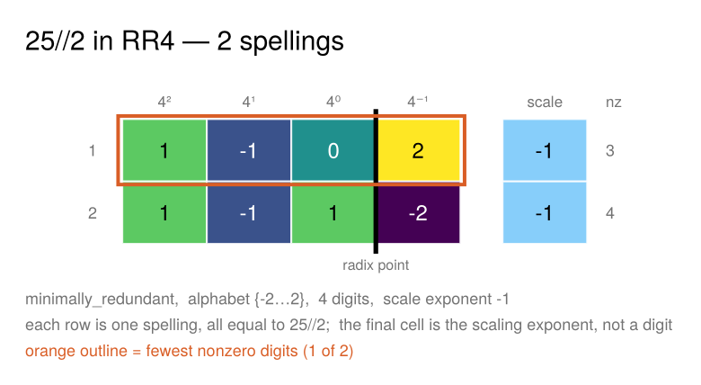
plot_rr4_representations(25; method = :maximally_redundant)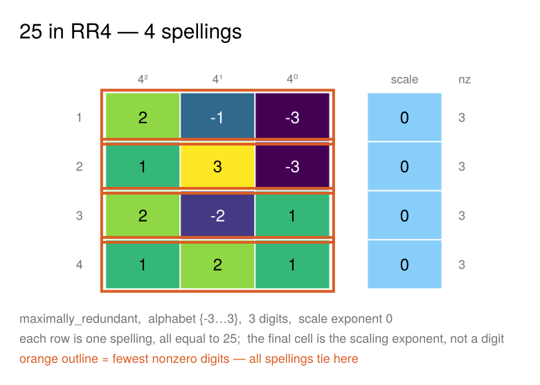
Every row denotes the same value; the differences are pure spelling. The final cell is the scaling exponent, drawn in a flat light blue rather than on the viridis scale — it is an exponent, not a digit, and sharing a colour scale would imply a comparison that does not exist.
There is no colorbar by default: an RR4 alphabet holds at most seven values and each is printed in its own cell, so a legend would spend width restating the labels. Pass colorbar = true if you want one.
Widen the field and the freedom grows:
plot_rr4_representations(10; method = :maximally_redundant, ndigits = 4)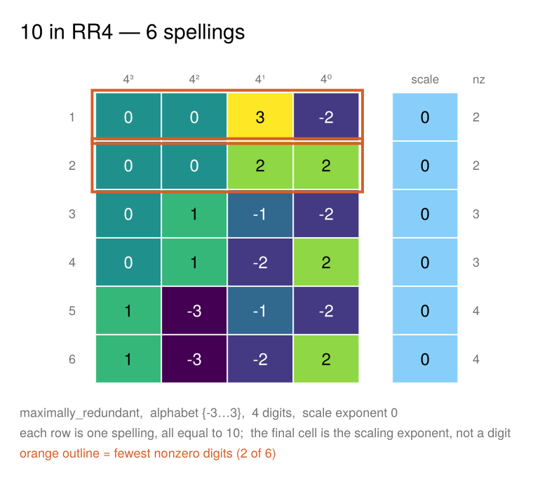
Minimal weight: the cheapest spelling
The count of spellings is a curiosity; the minimum nonzero count is the engineering quantity, because a constant multiplier costs one adder/subtractor per nonzero digit.
xpuFP.minimal_weight — Function
minimal_weight(x; method=:minimally_redundant, ndigits=nothing, fracdigits=nothing)
-> IntThe fewest nonzero digits any spelling of x can use — i.e. the cheapest the value can be as a constant multiplier, at one adder per nonzero digit beyond the first.
Computed by a shortest-path dynamic program over the carry state, not by enumeration, so it stays fast at widths where the number of spellings runs to hundreds of thousands. Returns -1 when the value does not fit in ndigits.
julia> minimal_weight(231), weight(to_rr4(231)) # the one-pass form is not minimal
(4, 5)
julia> minimal_weight(1000), weight(to_rr4(1000))
(3, 4)
julia> minimal_weight(231; method = :maximally_redundant)
4xpuFP.weight_distribution — Function
weight_distribution(x; method=:minimally_redundant, ndigits=nothing,
fracdigits=nothing) -> Vector{BigInt}How many spellings have each nonzero count: element k+1 is the number of spellings with exactly k nonzero digits.
The whole distribution comes from one dynamic program — the per-state generating polynomial in the weight variable — so it costs no more than counting does, and it sums to count_rr4_representations.
julia> d = weight_distribution(231);
julia> sum(d) == count_rr4_representations(231)
true
julia> findfirst(!iszero, d) - 1 == minimal_weight(231)
truexpuFP.weight_stats — Function
weight_stats(values; method=:minimally_redundant, ndigits=nothing) -> WeightStatsQuantify the minimal-weight behaviour over a collection of values: the distribution of minimum weights, the resulting density (nonzeros per digit), and how much the one-pass conversion leaves on the table.
julia> weight_stats(rand(1:10^6, 200))xpuFP.WeightStats — Type
WeightStatsSummary statistics for the minimal-weight question over a collection of values.
Fields
method, ndigits, nsamples, min_weight, mean_weight, median_weight, max_weight, density (= mean_weight / ndigits), canonical_mean, canonical_density, saving (fraction by which the one-pass conversion exceeds the minimum).
xpuFP.weight_scaling — Function
weight_scaling(widths; method=:minimally_redundant, samples=200, rng=default_rng())
-> Vector{NamedTuple}Measure how the minimal-weight density scales with word length, by sampling random values at each width.
Values are drawn from [0, a(4ⁿ−1)/(r−1)], the range the alphabet can actually represent in n digits — sampling beyond it silently mixes in values that do not fit.
Measured limits (400 samples, widths to 128):
| alphabet | minimal-weight density |
|---|---|
{-2..2} minimally redundant | $\to 2/3 \approx 0.667$ |
{-3..3} maximally redundant | $\to 3/5 = 0.600$ |
radix-2 {-1,0,1} (CSD/NAF) | $1/3$ exactly, the classical result |
More redundancy buys a lower density, as it must: the alphabets are nested, so the minimum over the larger set cannot exceed the minimum over the smaller.
julia> weight_scaling([16, 32, 64])xpuFP.plot_weight_scaling — Function
plot_weight_scaling(widths = [8, 16, 32, 64]; samples=200, rng=Random.default_rng(),
size=(880, 400)) -> FigureHow the minimal-weight density — nonzero digits per digit position — scales with word length, for both radix-4 alphabets, with the one-pass conversion for comparison.
The measured limits are marked: $2/3$ for the minimally redundant alphabet and $3/5$ for the maximally redundant one. More redundancy buys a lower density, as it must — the alphabets are nested, so the minimum over the larger set cannot exceed the minimum over the smaller.
Values are sampled from the range each alphabet can actually represent at that width; sampling beyond it would silently mix in values that do not fit.
Both come from a dynamic program over the carry — enumerating up to F(n+1) spellings to find the cheapest is hopeless past a dozen digits.
julia> using xpuFP
julia> minimal_weight(231), weight(to_rr4(231))
(4, 5)
julia> minimal_weight(1000), weight(to_rr4(1000))
(3, 4)How it scales
Sampling random values at each width and taking the mean minimal weight per digit position gives a density that converges cleanly:
| system | minimal-weight density |
|---|---|
radix-2 {-1,0,1} (CSD / NAF) | $1/3$ — the classical result |
radix-4 {-2..2} minimally redundant | $\to 2/3 \approx 0.667$ |
radix-4 {-3..3} maximally redundant | $\to 3/5 = 0.600$ |
plot_weight_scaling([8, 16, 32, 64]; samples = 120, rng = MersenneTwister(9))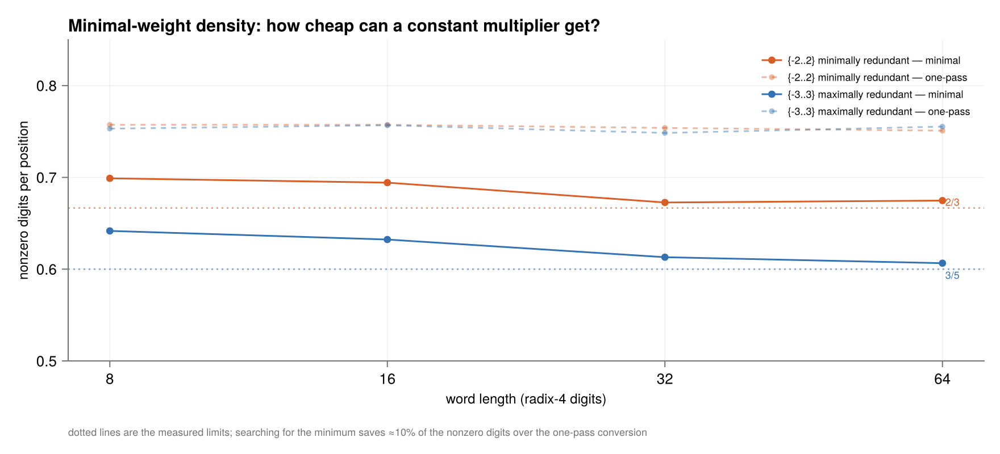
More redundancy buys a lower density, as it must: the alphabets are nested, so the minimum over the larger set cannot exceed the minimum over the smaller. And searching for the minimum is worth roughly 10% of the nonzero digits over the one-pass conversion, at every width — the one-pass form sits near 0.75 in both alphabets.
A width-n string over {-2..2} reaches only $2(4^n-1)/3$, not $4^n$. Sampling beyond it mixes in values that do not fit, and minimal_weight returns -1 for those — which will quietly wreck an average if you do not filter it. weight_scaling samples the correct range for you.
Canonical forms — and why radix 4 has no obvious one
xpuFP.canonical_rr4 — Function
canonical_rr4(x; method=:minimally_redundant, rule=:minweight, ndigits=nothing,
fracdigits=nothing) -> SignedDigitsA canonical redundant radix-4 form: a rule that selects exactly one spelling per value, restoring the uniqueness that redundancy gave away.
Radix 4 has no single agreed canonical form, so the rule is explicit:
:minweight(default) — the fewest nonzero digits, with ties broken by preferring the smaller digit at the less significant position first. Deterministic and unique, and it is the form you want for a constant multiplier, since it minimises the adder count.:nonadjacent— the spelling with no two adjacent nonzero digits. Unique when it exists, but at radix 4 it usually does not: about 85% of values have none. Throws if the value has no such form; test first withhas_nonadjacent_form.:onepass— whateverto_rr4produces, i.e. the non-redundant{0..3}digits with out-of-alphabet digits rewritten by a single borrow pass. Cheap and reproducible, but not minimum weight — it exceeds the minimum for about 28% of values.
julia> weight(canonical_rr4(231)), weight(to_rr4(231))
(4, 5)
julia> value(canonical_rr4(1000)) == 1000
true
julia> weight(canonical_rr4(1000; rule = :onepass))
4At radix 2 the non-adjacent form exists for every value, is unique, and is minimum weight — three properties in one construction, which is what makes "the" CSD well defined. At radix 4 the first property fails, so minimality and uniqueness have to be arranged separately.
xpuFP.nonadjacent_rr4 — Function
nonadjacent_rr4(x; method=:minimally_redundant, ndigits=nothing, fracdigits=nothing)
-> Union{SignedDigits,Nothing}The radix-4 spelling with no two adjacent nonzero digits, or nothing when none exists.
At radix 2 this is the CSD/NAF and always exists. At radix 4 it usually does not — the minimal-weight density is about 2/3, well above the 1/2 that non-adjacency would demand, so most values simply cannot be spread out that thinly. When it does exist it is unique and minimum weight (verified exhaustively for values below 600).
julia> nonadjacent_rr4(4) |> digit_string
"10"
julia> nonadjacent_rr4(231) === nothing
truexpuFP.has_nonadjacent_form — Function
has_nonadjacent_form(x; method=:minimally_redundant, ndigits=nothing) -> BoolWhether x admits a non-adjacent radix-4 spelling. About 15% of values do, in either alphabet — which is precisely why the CSD construction does not carry over to radix 4.
"Canonical" means a rule that selects exactly one spelling per value, restoring the uniqueness redundancy gave away. At radix 2 the non-adjacent form does this in a single stroke, because it has three properties at once:
- it exists for every value,
- it is unique, and
- it is minimum weight.
That is what makes the CSD well defined, and why csd needs no options.
At radix 4, property (1) fails. Measured over the values 0–600, only about 15% have any non-adjacent spelling at all, in either alphabet — unsurprising once you know the minimal-weight density is $\approx 2/3$, well above the $1/2$ that non-adjacency would demand. Most radix-4 values simply cannot be spread out that thinly.
Properties (2) and (3) do survive: where a non-adjacent form exists it is unique and is minimum weight (verified exhaustively below 300, both alphabets).
So a radix-4 canonical form has to state its rule:
rule | what it selects | unique? | minimum weight? |
|---|---|---|---|
:minweight (default) | fewest nonzeros, ties to the smaller digit at the less significant end | yes | yes |
:nonadjacent | no two adjacent nonzeros | yes | yes — but exists for only ~15% of values |
:onepass | what to_rr4 emits | yes | no — exceeds the minimum for ~28% of values |
julia> using xpuFP
julia> weight(canonical_rr4(231)), weight(to_rr4(231))
(4, 5)
julia> nonadjacent_rr4(231) === nothing
trueIt applies one borrow pass to the non-redundant {0..3} digits — deterministic and reproducible, so it is a well-defined selection, but it is not minimum weight. Use canonical_rr4 when the adder count matters.
There is a third, quite different sense of "canonical" worth keeping separate: the unique non-redundant {0..3} form, which is what rr4_to_canonical produces. That is not a redundant representation at all — it is the exit conversion, the carry-propagate that a redundant datapath pays once on the way out.
Lower-level accessors
xpuFP.all_rr4_representations — Function
all_rr4_representations(x, ndigits=min_ndigits(x); alphabet=MIN_REDUNDANT,
fracdigits=nothing, exponent=nothing) -> Vector{SignedDigits}Every ndigits-digit spelling of x in the given alphabet, sorted by nonzero count.
This is the redundancy made concrete: the count is the spelling freedom the local addition rule spends, and it grows fast with both the alphabet and the length.
The set of spellings is only finite once the digit count is fixed — a value can always be padded with leading zeros, or re-spelled longer. Omitting ndigits defaults to min_ndigits, the shortest width the alphabet allows, which is usually a small set; widen it to see the freedom grow (see rr4_representation_counts).
julia> length(all_rr4_representations(10, 4)) # {-2..2}
3
julia> length(all_rr4_representations(10, 4; alphabet = MAX_REDUNDANT))
6
julia> value(first(all_rr4_representations(49, 4)))
49xpuFP.count_rr4_representations — Function
count_rr4_representations(x, ndigits; alphabet=MIN_REDUNDANT, fracdigits=nothing) -> IntHow many ndigits-digit spellings of x exist, without materialising them. Counted by dynamic programming over the carry, so it stays fast where enumeration would not.
xpuFP.min_ndigits — Function
min_ndigits(x; alphabet=MIN_REDUNDANT, fracdigits=nothing) -> IntThe fewest digits any spelling of x can use in this alphabet.
More redundancy means a larger per-digit range, so the maximally redundant alphabet can sometimes spell a value one digit shorter than the minimally redundant one.
xpuFP.max_representable — Function
max_representable(ndigits, alphabet) -> BigIntThe largest magnitude an ndigits-digit string over the alphabet can spell, a·(4ⁿ − 1)/3.
xpuFP.minimal_rr4 — Function
minimal_rr4(x; alphabet=MIN_REDUNDANT, fracdigits=nothing, by=:weight) -> SignedDigitsThe shortest spelling of x: the fewest digits the alphabet allows.
Among the shortest, ties are broken by by:
:weight(default) — fewest nonzero digits, i.e. cheapest as a constant multiplier;:onepass— whatever the one-pass conversion emits, no search. (Note this is not a canonical form in the CSD sense; seecanonical_rr4.)
Note this is minimal length, an entirely different axis from the minimally redundant alphabet; both are available independently.
julia> sd = minimal_rr4(49);
julia> length(sd), value(sd)
(3, 49)
julia> weight(minimal_rr4(63)) <= weight(to_rr4(63))
truexpuFP.rr4_with_length — Function
rr4_with_length(x, ndigits; alphabet=MIN_REDUNDANT, exponent=nothing,
fracdigits=nothing) -> SignedDigitsSpell x using exactly ndigits digits, at an optionally forced exponent.
Padding above the minimum is free — leading zeros cost nothing and change no value — which is how a redundant datapath keeps every operand the same width regardless of magnitude. Asking for fewer digits than the alphabet can carry raises an error naming the shortfall.
julia> sd = rr4_with_length(49, 6);
julia> length(sd), value(sd), digit_string(sd)
(6, 49, "000301")
julia> sd = rr4_with_length(49, 6; exponent = -2); # two fraction digits
julia> value(sd), digit_string(sd)
(49, "0301.00")xpuFP.rr4_rescale — Function
rr4_rescale(sd::SignedDigits, exponent::Integer) -> SignedDigitsRe-express a digit string at a different (finer or equal) exponent, padding with low-order zeros. The value is invariant; only the alignment changes.
Used internally by rr4_add to line up operands before the column-wise add.
The simplest question — how many ways can this be spelled? — is one call:
julia> using xpuFP
julia> rr4_representation_counts(6)
2
julia> rr4_representation_counts(10; method = :maximally_redundant)
2That uses the default alphabet and the shortest width that fits. Give it a range of widths instead and it sweeps them, which is where the freedom becomes visible.
The spelling count is the resource the local addition rule spends, and it grows with both the alphabet and the length. At a fixed 4 digits:
| value | {-2..2} | {-3..3} |
|---|---|---|
| 10 | 3 | 6 |
| 25 | 3 | 8 |
| −7 | 2 | 6 |
Why the counts jump around
The counts look erratic — rr4_representation_counts.([26, 26.3, 26.35, 26.4, 26.5]) gives 3, 3, 253732, 271443, 4 — but the mechanism is simple and the bound is exact.
xpuFP.rr4_branch_residues — Function
rr4_branch_residues(method=:minimally_redundant) -> Vector{Pair{Int,Vector{Int}}}Which running remainders admit more than one digit — the sole source of spelling freedom, and therefore the whole explanation of how the representation counts behave.
Working from the least significant end, position k can only hold a digit d ≡ rem (mod 4). In the minimally redundant alphabet exactly one residue offers a choice:
rem mod 4 | viable digits | choices |
|---|---|---|
| 0 | 0 | 1 |
| 1 | 1 | 1 |
| 2 | -2, 2 | 2 |
| 3 | -1 | 1 |
The maximally redundant alphabet branches at three residues out of four, which is why its counts grow so much faster.
julia> rr4_branch_residues()
4-element Vector{Pair{Int64, Vector{Int64}}}:
0 => [0]
1 => [1]
2 => [-2, 2]
3 => [-1]xpuFP.rr4_max_count — Function
rr4_max_count(ndigits; method=:minimally_redundant) -> BigIntThe largest number of spellings any value can have at this width — a closed form, and a sharp bound.
- Minimally redundant
{-2..2}: exactly the Fibonacci numberF(n+1), so counts grow likeφⁿwithφ ≈ 1.618. Only one residue in four branches, and branches recombine, which is precisely what produces a Fibonacci recurrence rather than2ⁿ. - Maximally redundant
{-3..3}: exactly2^(n-1).
Verified against exhaustive search over all values for n ≤ 11.
julia> [Int(rr4_max_count(n)) for n in 1:8]
8-element Vector{Int64}:
1
2
3
5
8
13
21
34
julia> [Int(rr4_max_count(n; method = :maximally_redundant)) for n in 1:8]
8-element Vector{Int64}:
1
2
4
8
16
32
64
128
julia> rr4_max_count(27) == count_rr4_representations(0.1, 27) # 0.1 attains it
trueWorking from the least significant end, position k can only hold a digit d ≡ rem (mod 4). In {-2..2} exactly one residue in four offers a choice:
rem mod 4 | viable digits | choices |
|---|---|---|
| 0 | 0 | 1 |
| 1 | 1 | 1 |
| 2 | -2, 2 | 2 |
| 3 | -1 | 1 |
So a value's spelling count is decided by how often its remainder trajectory lands on ≡ 2. That is why the two neighbours differ so violently:
| value | scaled integer N | N mod 4 | levels that branch | count |
|---|---|---|---|---|
26.3 | 7402791887490253 | 1 (odd) | 3 of 27 | 3 |
26.35 | 7416865636325786 | 2 (even) | 27 of 27 | 253 732 |
26.3 is odd, so its first step is forced, and its trajectory then avoids ≡ 2 for 24 consecutive levels. 26.35 starts at ≡ 2 and branches at every level.
The maximum is a closed form, verified against exhaustive search for n ≤ 11:
\[\max_x \#\text{spellings}(x, n) = \begin{cases} F(n+1) & \{-2..2\} \\ 2^{\,n-1} & \{-3..3\} \end{cases}\]
Counts in the minimally redundant alphabet therefore grow like $\varphi^n$ ($\varphi \approx 1.618$), not $2^n$ — because branches recombine: distinct digit choices often lead to the same remainder, which is exactly what turns a binary tree into a Fibonacci recurrence. The maximally redundant alphabet branches at three residues out of four and does reach $2^{\,n-1}$.
0.1 attains the bound exactly, at both width 27 (F(28) = 317811) and width 28 (F(29) = 514229).
Over 400 random floats near 26 the median count is about 150, the quartiles 54 and 432, against a theoretical ceiling of 317 811. So 26.3's count of 3 is unusually low and 26.35's quarter-million unusually high — both are tails of a very wide distribution.
The wider alphabet often needs fewer digits — 49 takes 4 in {-2..2} but only 3 in {-3..3} — so rr4_representation_counts(49) and its :maximally_redundant counterpart are measured at different widths. Pass an explicit ndigits to compare the alphabets on equal terms.
xpuFP.rr4_transfer — Function
rr4_transfer(s::Integer) -> IntThe maximal-set transfer rule: ship ±1 when |s| ≥ 3, otherwise nothing.
Equivalently — and this is the slicker route — t = round(s/4) with ties toward zero, so the interim digit u = s − 4t is nothing but a rounding remainder: the signed distance from s to the nearest multiple of 4. Any real number lies within half a grid step of the nearest grid point, so |u| ≤ ½·4 = 2 in one line — the very same half-interval bound that governs round-to-nearest floating point everywhere else, wearing integer clothes.
The threshold is load-bearing: waiting for |s| ≥ 4 would permit u = 3, an incoming +1 would make w = 4 — illegal — forcing a fresh transfer that depends on the incoming one. A chain, the very disease being cured.
xpuFP.rr4_transfer_minimal — Function
rr4_transfer_minimal(s::Integer, s_right::Integer) -> IntThe minimal-set ({-2..2}) transfer rule. The maximal formulation provably cannot survive here — with a = 2, absorbing ±1 would demand |u| ≤ 1, yet the column sum s = 2 has no compliant split. What replaces it is a rule with a one-column peek:
\[t_{i+1} = \begin{cases} 0 & |s_i| \le 1\\ \pm1 & |s_i| \ge 3 \ (\text{sign of } s_i)\\ 1 \text{ if } s_{i-1} \ge 0,\ \text{else } 0 & s_i = 2\\ -1 \text{ if } s_{i-1} \le 0,\ \text{else } 0 & s_i = -2 \end{cases}\]
The borderline sums ±2 — exactly the cases that broke pure locality — are resolved by the neighbour's sign, which determines the sign of the incoming transfer before it arrives.
The relationship between the two transfers is not a message but a common cause: both t_{i+1} = f(sᵢ, s_{i-1}) and tᵢ = f(s_{i-1}, s_{i-2}) read the shared column s_{i-1}, and the peek was chosen so that exactly when the interim is pushed to its rim, the sign of that shared column forbids the incoming transfer from pushing it over.
xpuFP.rr4_add — Function
rr4_add(x, y; alphabet=MAX_REDUNDANT) -> RR4AddTraceCarry-free addition in redundant radix 4.
Every position forms its digit sum independently; sums past the threshold shed a transfer of ±1 to the next column and keep an interim digit in [-2,2], so absorbing an incoming transfer can never push a digit out of range — no chain can form. Addition depth is O(1) in the word length, against Θ(log n) for any non-redundant representation.
Accepts SignedDigits or plain integers; integers are converted with to_rr4 first.
julia> tr = rr4_add(6, 43); # the report's worked example
julia> value(tr.result)
49
julia> tr.depth # constant, whatever the width
3
julia> tr = rr4_add(7, -1; alphabet=MIN_REDUNDANT); # the peek earns its keep
julia> value(tr.result), any(c -> c.peeked, tr.columns)
(6, true)rr4_add(x, y; alphabet=MIN_REDUNDANT)Any two values — integers, floats, rationals, or existing digit strings — are converted with to_rr4 and added carry-free.
xpuFP.rr4_split_table — Function
rr4_split_table() -> Vector{NamedTuple}The complete split table: all thirteen possible column sums s ∈ [-6,6], each with its transfer t and interim digit u = s − 4t. Every u lands in [-2,2].
xpuFP.conventional_add_trace — Function
conventional_add_trace(x::Integer, y::Integer; radix=4) -> Vector{NamedTuple}The same addition in the conventional, non-redundant system, for contrast: the canonical spellings are forced, and so is the sequencing — each position waits on the carry from the one below. Depth grows with the digit count.
julia> tr = conventional_add_trace(6, 43);
julia> [(c.i, c.sum, c.digit, c.carry_out) for c in tr]
3-element Vector{Tuple{Int64, Int64, Int64, Int64}}:
(0, 5, 1, 1)
(1, 4, 0, 1)
(2, 1, 1, 0)xpuFP.ripple_depth — Function
ripple_depth(x::Integer, y::Integer; radix=4) -> IntHow many sequential carry stages a conventional adder needs for this pair — the length of the dependency chain that redundant arithmetic removes.
xpuFP.spelling_census — Function
spelling_census(v::Integer, ndig::Integer, a::Integer) -> IntHow many ndig-digit radix-4 strings over {-a..a} spell the value v.
The surplus is what the local addition rule spends: measured over 4-digit strings the value 10 has 3 minimal spellings and 6 maximal; 25 has 3 and 8; −7 has 2 and 6.
The maximal alphabet
With digits $\{-3..3\}$ there is one unit of slack on each flank — exactly the room needed to absorb a $\pm 1$ transfer unconditionally, so the transfer decision reads one column only.
plot_rr4_addition(rr4_add(6, 43))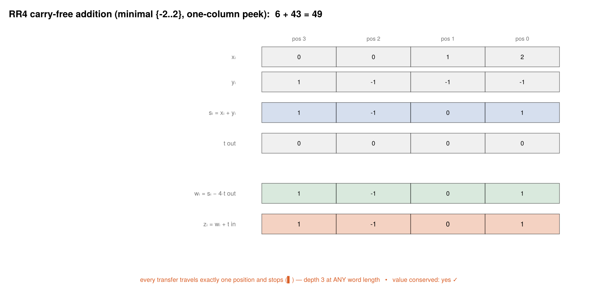
The minimal alphabet, and its one-column peek
$\{-2..2\}$ is Booth's alphabet and the one that actually ships. It has zero slack, so the rule buys safety with information instead: a peek at the right neighbour's sign, which determines the sign of the incoming transfer before it arrives.
plot_rr4_addition(rr4_add(121, 101; alphabet = MIN_REDUNDANT))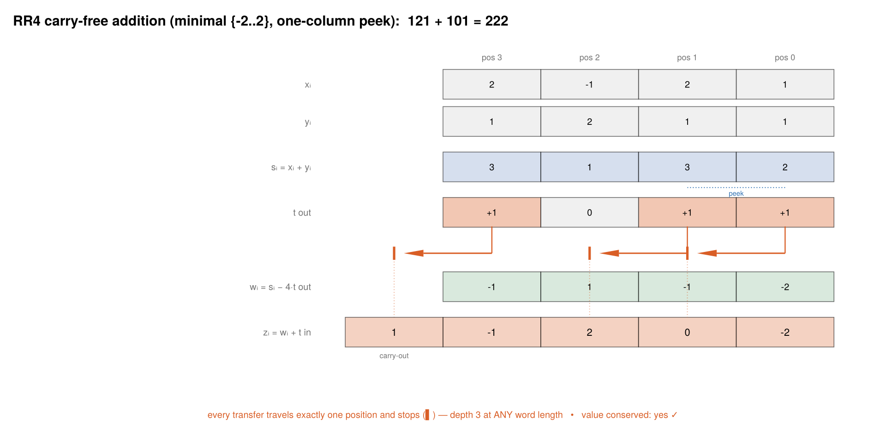
Redundancy and lookahead are exchangeable currencies: turn the dial down one click, and the rule pays for it with one column of sight.
Verification
Every claim is machine-checked rather than asserted.
xpuFP.absorption_table — Function
absorption_table() -> Matrix{Int}The absorption lemma by total enumeration: the final digit w = (s − 4t(s)) + t_in for every one of the 13 × 3 possible (column sum, incoming transfer) pairs.
All entries lie in [-3,3] — legal digits, no case needing a second transfer — and the extremes |w| = 3 occur precisely at the rounding ties s ∈ {-6,-2,2,6} combined with an aligned incoming transfer, confirming the half-step bound is tight.
Rows index s ∈ -6:6, columns index t_in ∈ -1:1.
xpuFP.verify_absorption — Function
verify_absorption() -> BoolCheck that every entry of absorption_table is a legal maximal-set digit.
julia> verify_absorption()
truexpuFP.verify_sign_coupling — Function
verify_sign_coupling() -> BoolThe lemma that makes closure work: for all arguments, s ≥ 0 ⟹ f(s,·) ∈ {0,1} and s ≤ 0 ⟹ f(s,·) ∈ {-1,0}. Checked over all 81 pairs.
xpuFP.verify_minimal_closure — Function
verify_minimal_closure() -> BoolExhaustively verify claim (ii) of the minimal-set theorem — digit closure — over all 9³ = 729 three-column windows (s_{i-2}, s_{i-1}, sᵢ): every output digit zᵢ = sᵢ − 4f(sᵢ,s_{i-1}) + f(s_{i-1},s_{i-2}) lands inside {-2..2}.
The engine is the sign-coupling lemma: a column's sign already determines which transfers it can emit, before its peek is even consulted.
julia> verify_minimal_closure()
truexpuFP.verify_rr4_random — Function
verify_rr4_random(ntrials=10_000; alphabet=MAX_REDUNDANT, ndig=6, rng=default_rng()) -> BoolRandom-input verification that the adder is a value homomorphism: for every pair of legal spellings, val(z) + t_out·4ⁿ = val(x) + val(y).
The correctness quantifies over all legal digit strings, not canonical ones — so feeding a different spelling of the same number may change the output string but cannot change its value. Representation freedom is the resource the arithmetic spends; value is the invariant it guards.
julia> verify_rr4_random(2000)
trueplot_absorption_table()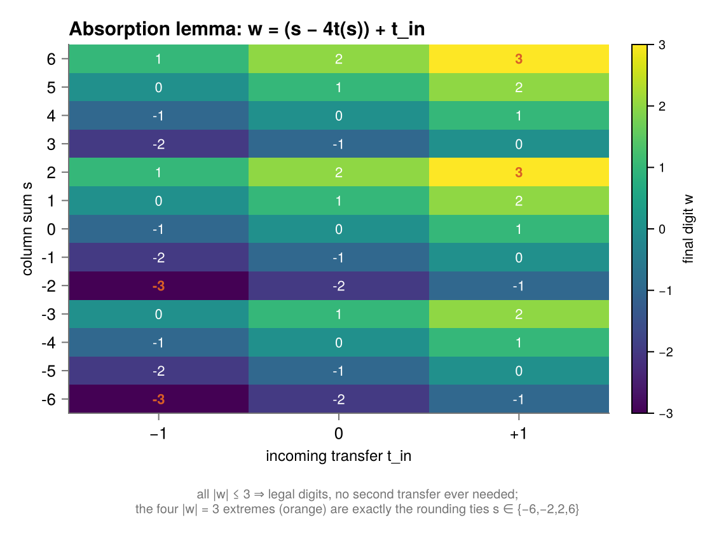
The complete minimal-set rule as data — note that seven of the nine rows of the transfer map are constant, and that panel (d) has exactly two forbidden cells:
plot_minimal_maps()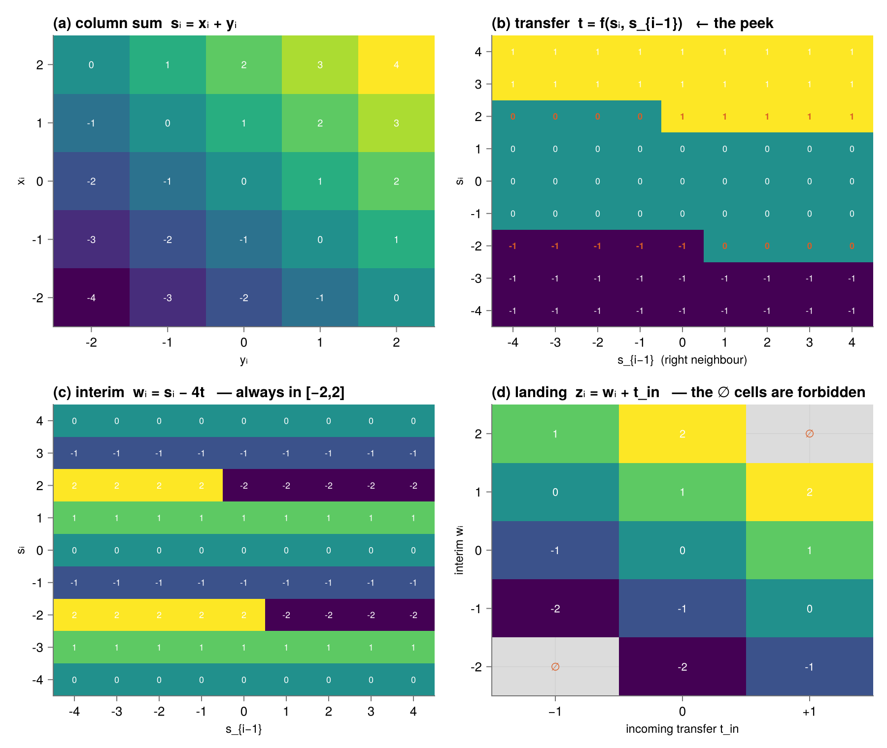
Why no chain can form
plot_dependency_graph(5)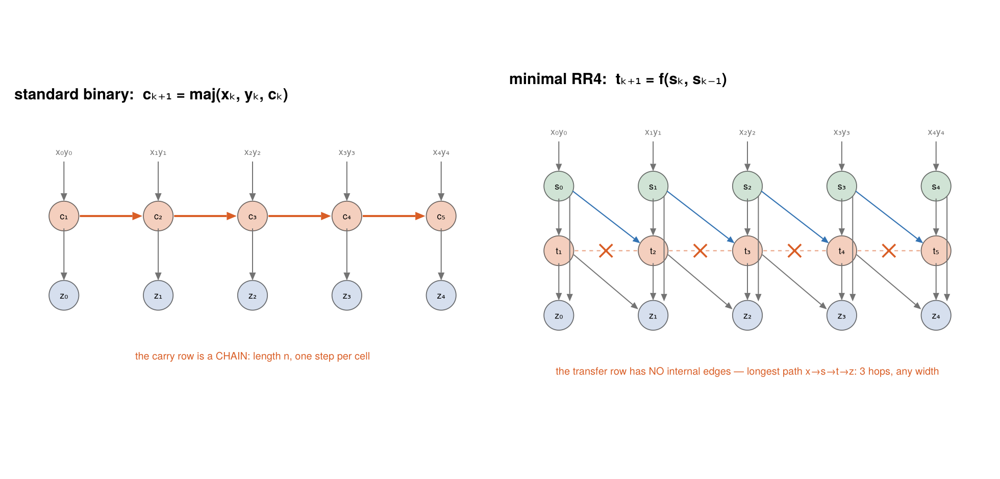
An arrow into a node means "argument of". On the left, c_{k+1} = maj(x_k, y_k, c_k) has the previous carry among its arguments, so the graph contains a horizontal path by construction — that path is the ripple. On the right the transfer row has no internal edges at all; the crossed dashed arrows mark edges that would have to exist for a carry to travel two steps, and the rule gives them nothing to be.
The same fact in Forney normal factor-graph form, where variables live on edges and constraints are boxes:
plot_factor_graph(4)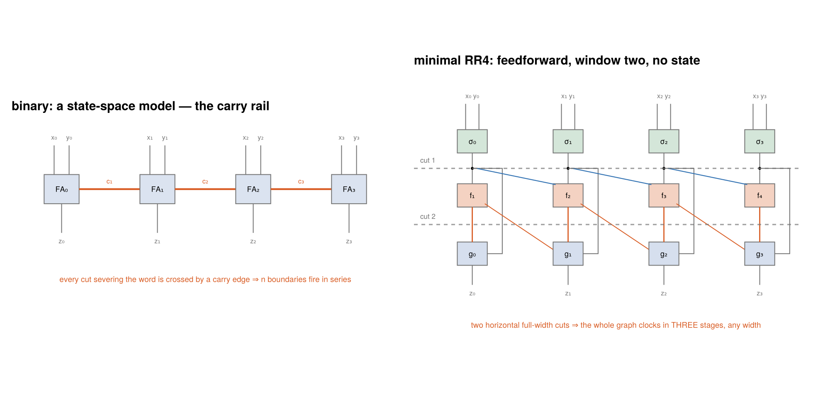
Binary addition is a state-space model — the carry variables form a rail threading every box, the trellis of a system with memory. Minimal RR4 admits two horizontal full-width cuts, so the whole graph clocks in three stages at any width. Carry propagation is memory; a redundant alphabet buys the model down from "chain with state" to "sliding window, order two".
The two escapes from the carry chain
plot_butterfly_vs_planes(16)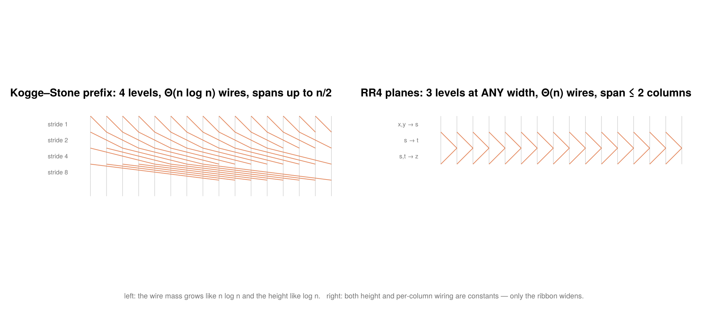
Keep binary and compute all carries as a parallel prefix — the Kogge–Stone network's diagonals are exactly the wings of a radix-2 FFT butterfly, because prefix networks and butterflies belong to the same graph family. Or change the number system, and there is no dependence left to organise.
The FFT connection is therefore a shared naming convention (radix as stage economics), not a shared topology: butterflies organise computations where every output needs every input, while a redundant alphabet builds one where no output needs more than its neighbourhood.
Booth recoding
xpuFP.booth_radix2 — Function
booth_radix2(bits) -> SignedDigitsBooth's original 1951 recoding: dᵢ = b_{i-1} − bᵢ with b₋₁ = 0, over the signed binary alphabet {-1,0,1}.
The algebra is a one-line telescope — the recoding literally computes 2x − x digit by digit:
\[\sum_i d_i 2^i = \sum_i b_{i-1}2^i - \sum_i b_i 2^i = 2x - x = x\]
so a run of 1s cancels internally, leaving +1 above its top and -1 at its foot. The digits are the discrete derivative of the bit string — nonzero only at 0↔1 edges — which is why runs of equal bits are free.
Its failure mode is data-dependent: an alternating multiplier like 01010101 makes every pair a boundary and recodes to eight nonzero digits against plain binary's four. That is exactly why MacSorley's 1961 modified Booth moved to radix 4.
xpuFP.booth_radix4 — Function
booth_radix4(B::Integer, n::Integer) -> SignedDigitsRadix-4 (modified) Booth recoding of the n-bit two's-complement value B, over the minimally redundant alphabet {-2..2}:
\[d_j = b_{2j-1} + b_{2j} - 2\,b_{2j+1}, \qquad b_{-1} = 0\]
Theorem 1
(i) dⱼ ∈ {-2,…,2} for every j; (ii) Σⱼ dⱼ4ʲ = B — exactly, for arbitrary two's-complement inputs, negative values included, with no correction step. That uniform signed multiplication is what Booth's 1951 title advertised.
Three readings of the same formula, one per proof it powers:
- It is a derivative. As
2t_{2j+1} + t_{2j}over the radix-2 Booth digitstᵢ = b_{i-1} − bᵢ, the window reads two edge-digits at once — modified Booth is original Booth read two digits at a time. - It is a pre-paid borrow. As
dⱼ = (uⱼ + cⱼ) − 4c_{j+1}withuⱼ = 2b_{2j+1}+b_{2j}andcⱼ = b_{2j-1}, every "carry" is an input bit, already written in the operand — nothing to propagate, hence theO(1)recode. - It is a packer. That is the entire content of "radix 4": same telescope, half the rows.
julia> d = booth_radix4(13, 6); # 13 = 16 − 4 + 1
julia> d.digits
3-element Vector{Int64}:
1
-1
1
julia> value(d)
13
julia> value(booth_radix4(-74, 8)) # negatives need no correction
-74xpuFP.booth_radix4_unsigned — Function
booth_radix4_unsigned(B::Integer, n::Integer) -> SignedDigitsThe same device run with zero-extension instead of sign-extension, which recodes unsigned operands. This is the origin of the "+1 guard digit": zero-extending a 24-bit unsigned significand to even width 26 yields 13 digits reconstructing it exactly.
Theorem 1 is really about bit strings with declared boundary behaviour — b₋₁ = 0 always, and the top extension chosen to encode the signedness convention. Evenness, odd widths, and guard digits are all the one theorem wearing different boundary conditions.
Returns exactly ⌈(n+1)/2⌉ digits so the count reflects the declared width, which is what a hardware row count needs; pass trim = true for the shortest string that happens to spell this particular value.
julia> length(booth_radix4_unsigned(12345, 24).digits) # FP32 significand width
13
julia> value(booth_radix4_unsigned(12345, 24))
12345xpuFP.booth_multiply — Function
booth_multiply(A::Integer, B::Integer, n::Integer) -> BoothProductMultiply A × B by radix-4 Booth recoding of the multiplier B.
\[A \times B = A \times \sum_j d_j 4^j = \sum_j d_j\,(A \ll 2j)\]
The index j runs over n/2 values, so at most ⌈n/2⌉ rows — against n for the schoolbook method.
julia> bp = booth_multiply(11, 13, 6);
julia> bp.rows, bp.product # three rows instead of six
([11, -44, 176], 143)
julia> bp = booth_multiply(93, -74, 8);
julia> bp.rows, bp.product
([-186, 744, -1488, -5952], -6882)xpuFP.booth_rows — Function
booth_rows(n::Integer) -> Tuple{Int,Int}Partial-product row counts, (plain, booth), for an n-bit unsigned multiplier: (n, ⌈(n+1)/2⌉) — the +1 inside the ceiling is the zero-extension that the unsigned convention requires, i.e. the guard digit. For FP32's 24-bit significand that is (24, 13); for FP64's 53-bit significand, (53, 27).
A signed n-bit multiplier needs only n/2 rows, since two's complement needs no extension — see booth_radix4.
Theorem 2 — why redundancy is the enabling trick, not an incidental one. Plain radix-4 digits {0,1,2,3} would also halve the rows, but the multiple 3A = 2A + A requires a full carry-propagate addition before summation begins. The signed set caps the digit magnitude at r/2 = 2 instead of r−1 = 3, and {0,±A,±2A} are all shifts. Generally, radix 2ᵏ recoding needs multiples up to 2^{k-1}A, shift-only iff 2^{k-1} ≤ 2 — so radix 4 is the unique sweet spot, and radix 8 exists only at the price of a precomputed 3A.
xpuFP.booth_pairing — Function
booth_pairing(B::Integer, n::Integer) -> NamedTupleThe second proof of Theorem 1, digit by digit: radix-2 Booth digits tᵢ (the discrete derivative of the bit string), then the shaded pairs packed into radix-4 digits dⱼ = 2t_{2j+1} + t_{2j}.
Modified Booth adds no new mathematics to original Booth — it reads the same telescope two digits at a time, halving the rows.
julia> p = booth_pairing(-74, 8);
julia> p.radix4.digits == p.packed
truexpuFP.booth_borrow_form — Function
booth_borrow_form(B::Integer, n::Integer) -> Vector{NamedTuple}The sharper range proof as a physical borrow scheme: dⱼ = (uⱼ + cⱼ) − 4c_{j+1}, where uⱼ = 2b_{2j+1} + b_{2j} is window j's own 2-bit field, cⱼ = b_{2j-1} its carry-in, and c_{j+1} = b_{2j+1} its carry-out.
Each window is a teller holding uⱼ plus a +1 handed up from below; whenever the holdings reach 2 the teller pays a single +1 into the next radix-4 place and is charged −4 locally. The physical punchline: unlike addition's carries, which are data-dependent signals that must ripple, these "carries" are plain input bits — the operand arrives with its entire borrow schedule pre-written, which is exactly why all n/2 digits emerge in parallel at constant depth.
xpuFP.verify_booth_exhaustive — Function
verify_booth_exhaustive(n::Integer) -> BoolVerify Theorem 1 over all 2ⁿ two's-complement values of width n: the recoded digits stay in {-2..2} and reconstruct the value exactly.
julia> verify_booth_exhaustive(8)
true
julia> verify_booth_exhaustive(10)
trueplot_booth_windows(-74, 8)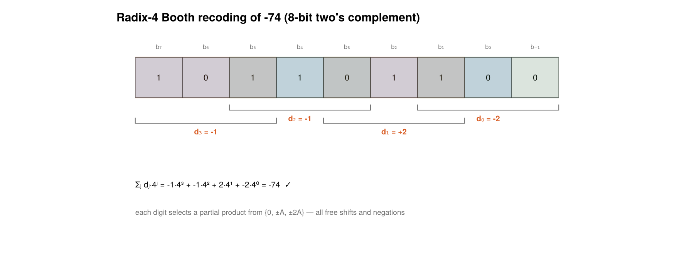
Each brace shares one bit with its neighbour — the overlap is what makes the recoding correct. Theorem 1 says the digits stay in $\{-2..2\}$ and reconstruct the two's-complement value exactly, negatives included, with no correction step.
Plain radix-4 digits $\{0,1,2,3\}$ would also halve the rows, but the multiple $3A = 2A + A$ needs a real addition before summation begins. The signed set caps the digit magnitude at $r/2 = 2$, and $\{0, \pm A, \pm 2A\}$ are all shifts. Generally radix $2^k$ needs multiples up to $2^{k-1}A$, shift-only iff $2^{k-1} \le 2$.
Carry-save and the reduction trees
xpuFP.csa — Function
csa(a::Integer, b::Integer, c::Integer) -> Tuple{Int,Int}One 3:2 compressor (a full adder per bit position), returning the (sum, carry) pair:
\[a + b + c = (a \oplus b \oplus c) + 2\,\mathrm{maj}(a,b,c)\]
Per bit position, three bits sum to a two-bit number whose low bit is exactly the parity and whose high bit is exactly the majority — eight cases, all checked.
This is the base-2 sibling of RR4's split rule s = 4t + u: the "carry" is not propagated but simply written down in a second vector, one position to the left, where later tree levels treat it as ordinary input. Transfers that travel one hop and stop, deferred wholesale rather than absorbed one at a time.
julia> u, t = csa(93, 118, 45);
julia> u + t == 93 + 118 + 45
truexpuFP.verify_csa_identity — Function
verify_csa_identity(trials=10_000; rng=default_rng()) -> BoolCheck a + b + c = u + t on random integers, negatives included (the identity holds on two's-complement patterns).
julia> verify_csa_identity(5000)
truexpuFP.wallace_reduce — Function
wallace_reduce(rows) -> ReductionTraceWallace's greedy schedule (C. S. Wallace, 1964): every level feeds as many disjoint triples of rows as possible into 3:2 compressors, turning r rows into ⌈2r/3⌉, until exactly two rows remain for the single exit carry-propagate adder.
The tree is the ancestry structure inside that narrowing: pick either final wire and trace it upward — its provenance branches three ways at every box it passed through, a ternary tree whose leaves are the original rows. Depth is Θ(log_{3/2} r), which is where the report's 24 → 16 → 11 → 8 → 6 → 4 → 3 → 2, seven levels, comes from.
julia> tr = wallace_reduce([1, 2, 4, 8, 16, 32, 64, 128, 256]);
julia> [length(l) for l in tr.levels]
5-element Vector{Int64}:
9
6
4
3
2
julia> tr.total, tr.exact
(511, true)xpuFP.dadda_reduce — Function
dadda_reduce(rows) -> ReductionTraceDadda's lazy 1965 variant: compress only enough at each level to land on the precomputed targets …, 19, 13, 9, 6, 4, 3, 2.
Identical depth to Wallace, fewer compressor cells — work done earlier than necessary buys no depth. Real multipliers ship Dadda-style counts under the Wallace name.
julia> w = wallace_reduce(collect(1:24)); d = dadda_reduce(collect(1:24));
julia> w.nlevels == d.nlevels, d.ncells <= w.ncells
(true, true)xpuFP.reduction_schedule — Function
reduction_schedule(nrows::Integer; schedule=:wallace) -> Vector{Int}The row counts level by level, without doing any arithmetic — the shape of the tree.
julia> reduction_schedule(24) # plain binary, FP32 significand
8-element Vector{Int64}:
24
16
11
8
6
4
3
2
julia> reduction_schedule(13) # after Booth recoding: two levels shallower
6-element Vector{Int64}:
13
9
6
4
3
2xpuFP.dadda_targets — Function
dadda_targets(m::Integer) -> Vector{Int}The Dadda target sequence at or below m: 2, 3, 4, 6, 9, 13, 19, …, each term ⌊3/2 ×⌋ the previous.
xpuFP.compressor_cells — Function
compressor_cells(nrows::Integer) -> IntTotal 3:2 cells in a reduction from nrows to 2. Each cell eliminates exactly one row, so the count is simply nrows − 2 per bit column.
xpuFP.verify_tree_invariant — Function
verify_tree_invariant(rows; schedule=:wallace) -> BoolThe load-bearing check: the total of the live rows never changes at any level.
Note that u* is not a closed-form "XOR of everything" — the recursion interleaves parity and majority products at every level, and no formula like u* = ⊕ᵢrᵢ survives it. The theorem's content is precisely that no closed form is needed: the invariant is the whole proof.
julia> verify_tree_invariant(collect(1:24))
truexpuFP.booth_tree_saving — Function
booth_tree_saving(n::Integer) -> NamedTupleWhat Booth/RR4 buys, quantified for an n-bit multiplier: rows, tree levels, and compressor cells, plain versus recoded.
julia> booth_tree_saving(24)
(plain_rows = 24, booth_rows = 13, plain_levels = 7, booth_levels = 5, plain_cells = 22, booth_cells = 11, level_saving = 2, cell_ratio = 0.5)plot_wallace_tree([1, 2, 4, 8, 16, 32, 64, 128, 256])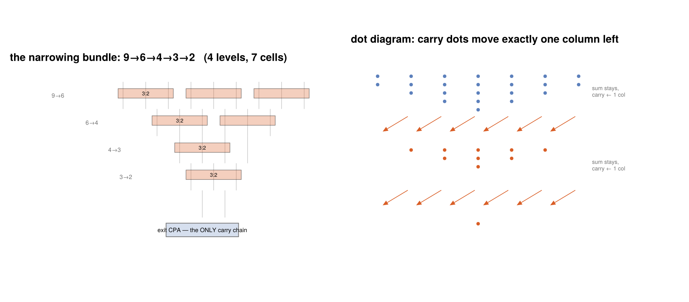
The narrowing bundle is the tree: trace any final wire upward and its ancestry is a ternary tree of boxes with the rows as leaves.
plot_reduction_pyramids(24)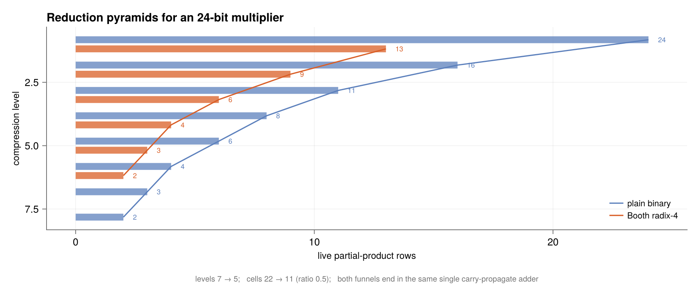
$\sigma \circ C = \sigma$. Everything else is scheduling. Note that $u^*$ is not a closed-form "XOR of everything" — the recursion interleaves parity and majority at every level. The theorem's content is precisely that no closed form is needed: the invariant is the whole proof.